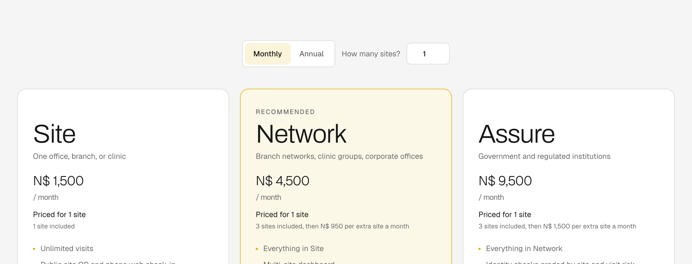

Key activities
- Build and harden the check-in platform
- Install and train front desks
- Run measured pilots
- Integrate with booking systems such as CiMSO INNkeeper
How Checkpoint creates value for hotels, lodges and their guests, how it earns revenue, and how it grows.
Properties pay a monthly subscription per site for private, encrypted guest check-in that also produces the legally required guest register. Guests never pay. We start with registered accommodation in Namibia, beginning at our family's own property, Hotel Etuna in Ongwediva, and grow through lodge groups and hospitality associations. We win by being private by design, usable by every guest whether or not they own a smartphone, able to work offline, and priced for Namibian properties.
Pricing is per site, so revenue grows with every branch a lodge group adds. Annual billing charges ten months for twelve. Guests never pay, and there is no per-visit fee: a busy weekend costs a property nothing extra.
| Plan | Best for | Monthly price | Sites included | Each extra site |
|---|---|---|---|---|
| Site | One hotel, lodge or guesthouse | N$1,500 | 1 | Not available |
| Network | Lodge groups and hotel chains | N$4,500 | 3 | N$950 |
| Assure | Properties with higher-assurance needs | N$9,500 | 3 | N$1,500 |

Management estimates at 30 September 2026, using the low-tech marketing math method: contribution per site covers fixed costs, and break-even volume is fixed costs divided by contribution per site (Dolan, 1998).
| Fixed costs | Per month |
|---|---|
| Founders' pay (two founders) | N$30,000 |
| Cloud hosting, database and storage | N$2,600 |
| Email delivery, monitoring and domains | N$1,050 |
| Software, accounting, insurance, phone and data | N$2,350 |
| Marketing and travel | N$6,000 |
| Total | N$42,000 |
| Variable cost per site | Per month |
|---|---|
| Hosting and email for the site | N$50 |
| Support, one hour at N$250 (two hours on Assure) | N$250 |
| Payment gateway fee, about 3 percent of the invoice | N$45 |
| Total on Site | N$345 |
| Plan | Monthly price | Variable cost | Contribution | Margin |
|---|---|---|---|---|
| Site (1 site) | N$1,500 | N$345 | N$1,155 | 77.0% |
| Network (3 sites) | N$4,500 | N$1,035 | N$3,465 | 77.0% |
| Network, each extra site | N$950 | N$328 | N$622 | 65.4% |
| Assure (3 sites) | N$9,500 | N$1,935 | N$7,565 | 79.6% |
| Assure, each extra site | N$1,500 | N$595 | N$905 | 60.3% |
Break-even is 37 sites. N$42,000 in fixed costs divided by N$1,155 contribution per Site gives 36.4, so 37 paying sites cover the business. At the top of the Year 1 range, 30 sites contribute N$34,650 a month, a gap of N$7,350 a month that the Award would close while the pilots run. If fixed costs double to N$84,000 when we hire two support staff, break-even moves to 73 sites, inside the Year 2 range of 60 to 100.
Onboarding pays back in under two months. Setting up and training a new site costs about N$1,500 once (half a day on site plus travel), which one Site subscription recovers in 1.3 months.
Price is highly leveraged, so we do not discount. A 20 percent price cut to N$1,200 lowers contribution per site by 25 percent to N$864 and raises break-even from 37 to 49 sites. A 20 percent rise to N$1,800 lifts contribution to N$1,446 and lowers break-even to 30 sites.
The Namibia Tourism Board's register holds the exact number of registered establishments. We will ask for that count in our pilot proposal to the Board, so break-even can also be stated as a share of the market.
| Factor | What it means for Checkpoint |
|---|---|
| Customers | Registered hotels, lodges and guesthouses must keep a guest register and file monthly returns (Regulations Relating to the Registration of Accommodation Establishments, 2004). Owners want guest privacy, a fast desk, a register that is always ready and a system that keeps working in outages. |
| Company | A live product, founders who grew up in hospitality, experience in payments and field systems, and a family hotel as the first pilot. |
| Competition | The paper book is free but exposes every guest. Imported visitor tools are priced per location in foreign currency. Property management systems handle bookings and billing, not the private front door. |
| Collaborators | CiMSO for booking data, a licensed payment gateway for card and instant payments, the Namibia Tourism Board, the Hospitality Association of Namibia, the Ministry of Information and Communication Technology and the Development Bank of Namibia. |
| Context | The Data Protection Bill is close to law (New Era, 2026), power and network outages are common outside the main towns, and smartphone ownership is uneven. |
| Element | Decision |
|---|---|
| Product | Private check-in for every guest, the legal register as a by-product, the optional offline reception tablet, badges for regular visitors and the CiMSO integration. |
| Price | Per site, in Namibia dollars: Site, Network and Assure. Annual billing charges ten months for twelve. No per-visit fee. |
| Place | Self-service signup at buffrcheckpoint.com, founder-led sales to lodge groups, and installation and training by our own team. Properties pay by electronic funds transfer, or by card or instant payment through our payment gateway partner. |
| Promotion | Planned with the six Ms below. |
| Element | Plan |
|---|---|
| Market | Owners and front-desk managers of registered accommodation, starting in the northern regions, then lodge groups nationally. |
| Mission | Publish the Hotel Etuna pilot results, reach 30 paying sites in Year 1 and pass break-even (37 sites) early in Year 2. |
| Message | "Your guests' details stay private, and your register is always ready for the Tourism Board." |
| Media | Demonstrations at properties along the northern route, reference visits to Hotel Etuna, Hospitality Association events, Tourism Board introductions, LinkedIn and WhatsApp Business. Every QR stand at a live desk shows the Checkpoint name to arriving guests. |
| Money | N$6,000 a month (N$72,000 in Year 1), already inside fixed costs. |
| Measurement | Signups, pilot-to-paid conversion, cost to win a site (target under N$4,000, about three and a half months of contribution), check-in time and cancellations. |
Imported visitor-management tools charge per location, in foreign currency. Prices below were read from each vendor's pricing page on 29 September 2026 and converted at approximately N$20.5 per euro and N$17.5 per United States dollar.
| Product | Plan | Approximate monthly cost per location | Notes |
|---|---|---|---|
| Vizito (Vizito, n.d.) | Standard to Enterprise | N$615 to N$2,050 | Lower plans cap visits at 100 or 300 a month |
| Envoy (Envoy, n.d.) | Premium | about N$6,300 | Billed annually in United States dollars |
| Checkpoint | Site | N$1,500 | Unlimited visits, local billing and support, works offline |
A lodge group with 20 sites would pay N$20,650 a month on Network, compared with about N$41,000 on Vizito's top plan and about N$126,000 on Envoy Premium.
Each assumption has a test and a clear pass signal.
| No. | Assumption | Test | Pass signal |
|---|---|---|---|
| 1 | Front desks still use shared books or open lists for guests and walk-ins | Interviews with front-desk managers about last week's process | Two of three describe shared visibility |
| 2 | Properties will pay N$1,500 per month after a 60 to 90 day pilot | Paid pilot at Hotel Etuna and one other property | Payment received; paper fallbacks fall |
| 3 | Phone check-in plus the receptionist covers at least 90 percent of arrivals | Channel mix during the pilot | Completion of 90 percent or more |
| 4 | At least one pilot site type needs the offline tablet | Include one low-connectivity site | Offline capture and sync measured |
| 5 | "Who was here last Tuesday" can be answered in 15 minutes or less | Timed drill at a pilot site | Measured time of 15 minutes or less |
| 6 | The cost of winning a site stays under N$4,000 | Track hours and travel per signed property | Under N$4,000 per site |
| Year | Sites | Annual recurring revenue |
|---|---|---|
| Year 1 | 15 to 30 | N$0.3m to N$0.7m |
| Year 2 | 60 to 100 | N$1.1m to N$2.4m |
| Year 3 | 120 to 180 | N$2.2m to N$4.3m |
| Year 4 | 200 to 280 | N$3.6m to N$6.7m |
| Year 5 | 300 to 400 | N$5.4m to N$9.6m |
Assumes a blended N$1,500 to N$2,000 per site per month. Break-even at current fixed costs is 37 sites.
| CC | Close corporation |
| N$ | Namibia dollar |
Dolan, R. J. (1998). Note on low-tech marketing math (Harvard Business School Note No. 9-599-011). Harvard Business School Publishing.
Envoy. (n.d.). Pricing. Retrieved September 29, 2026, from https://envoy.com/pricing
New Era. (2026, January 27). Data legislations under final polishing. https://neweralive.na/data-legislations-under-final-polishing/
Regulations Relating to the Registration of Accommodation Establishments, Government Notice No. 139 of 2004, Government Gazette No. 3235 (2004) (Namibia). https://www.lac.org.na/laws/annoREG/Namibia%20Tourism%20Board%20Act%2021%20of%202000%20-%20Regulations%202004-139.pdf
Vizito. (n.d.). Plans and pricing. Retrieved September 29, 2026, from https://vizito.eu/pricing/